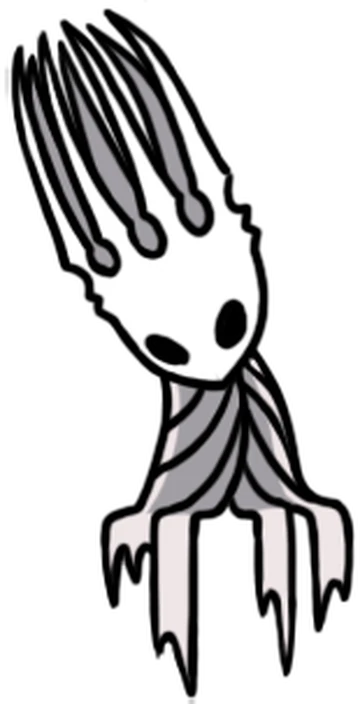

The lore
The past events in the Hollow Knight are not directly told to the player, but they permeates the areas that you explore. Although I advise to explore Hallownest at least once on your own before reading the article, here you will find the essential lore of the events that happened before the player controls the knight.
At the beginning, there was the Void. This was not what we may categorize as Void in our world, that being an empty space, for this Void was more of a substance which paradoxically creates entities and fills spaces. This substance, black as darkness itself, grew from the Abyss: a chasm situated at the deepest part of the whole Hallownest. It is said that an ancient civilization, which came and went long before our Knight roamed the underground, used to worship the Void. From the few relics of the past that we can still admire while visiting Hallownest, being them mostly totems and idols, we may speculate that this was a tribal civilization deeply linked to the Abyss itself. Probably formed near to its location and later expanded to other parts of the land. Some of these totems may hint to a being with black tendrils, which could represent Void’s ultimate state: the communion of the Void under the lead of a single will.

Before Hallownest existed, the land was split between tribes of insectoid and arachnoid beings: the moths who worshipped The Radiance, plant-like beings in Greenpath who worshipped Unn, the mantises, the mushrooms, the spiders and so forth. Then a higher being known as the Wyrm traveled to the land of Kingdom's Edge and metamorphosed into the Pale King.
He lowered himself to appear like the bugs that inhabited the land, and built up the kingdom of Hallownest, granting the beings freewill and sapience. He also sought to expand his kingdom to encompass all of the nearby lands and tribes. The mysterious King's good deeds and godly nature became very admirable to most creatures of Hallownest, the bugs began to follow him, and in doing so surrendered their archaic religious beliefs. Among them were the Moths, who abandoned their old deity, The Radiance.
The Radiance, becoming malevolent after being forgotten, began to agressively appear in the dreams of the bugs of Hallownest in an attempt to re-establish its following. These visions caused the bugs to go become mindless, violent, zombie-like undead beings, suffering eternally. The Radiance's plauge became known as The Infection.
The Pale King countered The Radiance by creating Vessels, living insectoid beings made from Void, which the Radiance was powerless against, as they had no ability to dream, or any freewill. Though thousands of Vessels were created, the Pale King only chose the purest Vessel to become the “Hollow Knight”. This Pure Vessel, called the Hollow Knight by the King, was then used as an instrument to seal The Radiance within it. The Hollow Knight was then locked inside a vault called the Black Egg Temple to prevent the Infection from ever manifesting again, for the safety of Hallownest.
However, The Hollow Knight’s shell eventually cracked due to a small flaw in its purity (its emotional attachment to its creator and father, the Pale King, who raised and trained it). The Infection began to leak out, once again corrupting the minds and bodies of everyone in Hallownest.
Due to this, The Pale King appointed three bugs, known as the Dreamers to make a seal that would stop the Infection. Monomon was a jellyfish-like scholar and teacher, Lurien was the enigmatic watcher of the City of Tears, and Herrah was the rebellious queen of Deepnest. Monomon and Lurien volunteered to become Dreamers while Herrah made a deal with the Pale King to produce a child. The Dreamers entered stasis to protect the Hollow Knight's slumber. However, even that couldn’t stop the infection.The kingdom came to ruin, and the Pale King, along with his court and palace, mysteriously vanished across the chaos.
The story of The Hollow Knight begins with the protagonist, The Knight, arriving in Dirtmouth on the border of the old kingdom. The Knight begins its journey through the ruins of Hallownest, seeking answers to the mysteries of its own past.